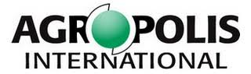

|
MISS-ABMS
ulti-platform nternational ummer chool on gent-ased
odelling & imulation for Renewable Resources
Management
Montpellier, France
Please, visit the official page
on Agropolis web site. 
Content
During the morning sessions, the principles, methods
and technics of the design, implementation and
exploration stages will be collectively taught. Specific
points will be addressed according to the expectations
and demands of the participants. The afternoon sessions
will be devoted to personal applications: the trainers
will support the participants in designing, implementing
and fine-tuning their own agent-based model.
Tools
Specific time slots will be allocated to teach the
graphical language UML as well as to introduce the
generic platforms Cormas,
Gama
and NetLogo
by demonstrating the same benchmark model. However, to
facilitate the organization of the afternoon sessions,
participants are requested to tick one of these three
platforms in their application form (see below).
Trainers
Géraldine Abrami, Bruno Bonté (Irstea), Cyril Piou,
Pierre Bommel, Christophe Le Page, François Bousquet,
Jean-Pierre Müller (CIRAD), Patrick Taillandier (Univ.
Rouen), Benoît Gaudou (Univ. Toulouse).
Application procedure and fees
- For students: 800 €
- For others: 1500 €
These registration fees include lunch & coffee/tea
during the day and a social dinner. Accomodation, dinner
and travel costs are not included.
For any further information, visit the Agropolis
page or contact the
organizers.
|
|